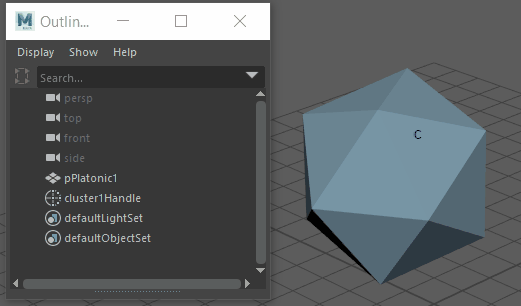

创建簇变形器时，可以首先设置创建选项，然后创建变形器，也可以在不更改当前设置的情况下立即创建变形器。如果不确定当前创建选项是什么，则在创建变形器之前选中选项可以节省之后调整变形器的属性的时间。
重要： 创建变形器之后，请避免更改可变形对象上的点（例如，CV、顶点或晶格点）的数量。更改点数可能会导致意外的变形效果。应尽量确保在对可变形对象的拓扑满意后，再开始使用变形器。可能需要保存对象的副本，以防需要执行进一步的建模。
创建簇变形器
- 选择一个或多个可变形对象。
- 在“绑定”(Rigging)菜单集中，选择“变形 > (创建) > 簇”(Deform > (Create) > Cluster)。
将创建簇变形器，并在对象上显示一个小的 C 图标 - 簇控制柄。
提示： 通过在属性编辑器中更改控制柄的“原点”(Origin)值，可以控制簇控制柄的放置。选择控制柄，在属性编辑器中查找 clusternHandleShape选项卡，并设置所需的“原点”(Origin) X、Y 和 Z 轴值。
设置簇选项并创建变形器
- 选择可变形对象。
- 在“绑定”(Rigging)菜单集中，选择“变形 > 簇”(Deform > Cluster) >
 以打开“簇选项”(Cluster Options)。
以打开“簇选项”(Cluster Options)。
- 在“簇选项”(Cluster Options)中，设置所需的选项，然后单击“创建”(Create)。
另请请参见“高级”(Advanced)变形器选项。
选择簇变形器控制柄
- 选择带有簇“c”图标的区域。
- 按住 Shift 键并选择以从选择中排除其他所有对象。

簇控制柄在对象上用一个小的“c”表示。可以在大纲视图(Outliner)中选择它。
选择“c”，然后按住 Shift 键并选择以移除其他所有对象，或在“大纲视图”(Outliner)中选择簇控制柄。